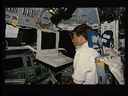

GPC

Five identical general-purpose computers aboard the orbiter control space shuttle vehicle systems. Each GPC is composed of two separate units, a central processor unit and an input/output processor. All five GPCs are IBM AP-101 computers. Each CPU and IOP contains a memory area for storing software and data. These memory areas are collectively referred to as the GPC's main memory. The central processor controls access to GPC main memory for data storage and software execution and executes instructions to control vehicle systems and manipulate data. In other words, the CPU is the ''number cruncher'' that computes and controls computer functions. The IOP formats and transmits commands to the vehicle systems, receives and validates response data from the vehicle systems and maintains the status of interfaces with the CPU and the other GPCs. The IOP of each computer has 24 independent processors, each of which controls 24 data buses used to transmit serial digital data between the GPCs and vehicle systems, and secondary channels between the telemetry system and units that collect instrumentation data. The 24 data buses are connected to each IOP by multiplexer interface adapters that receive, convert and validate the serial data in response to discrete signals calling for available data to be transmitted or received from vehicle hardware. During the receive mode, the multiplexer interface adapter validates the received data (notifying the IOP control logic when an error is detected) and reformats the data. During the receive mode, its transmitter is inhibited unless that particular GPC is in command of that data bus. During the transmit mode, a multiplexer interface adapter transmits and receives 28-bit command/data words over the computer data buses. When transmitting, the MIA adds the appropriate parity and synchronization code bits to the data, reformats the data, and sends the information out over the data bus. In this mode, the MIA's receiver and transmitters are enabled. The first three bits of the 28-bit word provide synchronization and indicate whether the information is a command or data. The next five bits identify the destination or source of the information. For command words, 19 bits identify the data transfer or operations to be performed; for data words, 16 of the 19 bits contain the data and three bits define the word validity. The last bit of each word is for an odd parity error test. The main memory of each GPC is non-volatile (the software is retained when power is interrupted). The memory capacity of each CPU is 81,920 words, and the memory capacity of each IOP is 24,576 words; thus, the CPU and IOP constitute a total of 106,496 words. The hardware controls for the GPCs are located on panel O6. Each computer reads the position of its corresponding output , initial program load and mode switches from discrete input lines that go directly to the GPC. Each GPC also has an output and mode talkback indicator on panel O6 that are driven from GPC output discretes. Each GPC power on , off switch is a guarded switch. Positioning a switch to on provides the computer with triply redundant power (not through a discrete) by three essential buses-ESS1BC, 2AC and 3AB-which run through the GPC power switch. The essential bus power is transferred to remote power controllers, which permits main bus power from the three main buses (MNA, MNB and MNC) to power the GPC. There are three RPCs for the IOP and three for the CPU; thus, any GPC will function normally, even if two main or essential buses are lost. Each computer uses over 600 watts of power. GPCs 1 and 4 are located in forward middeck avionics bay 1, GPCs 2 and 5 are located in forward middeck avionics bay 2, and GPC 3 is located in aft middeck avionics bay 3. The GPCs receive forced-air cooling from an avionics bay fan. There are two fans in each avionics bay but only one is powered at a time. If both fans in an avionics bay fail, the computers will overheat and could not be relied on to operate properly for more than 20 minutes if the initial condition is warm. Each GPC output switch is a guarded switch with backup , normal and terminate positions. The output switch provides a hardware override to the GPC that precludes that GPC from outputting (transmitting) on the flight-critical buses. The switches for the primary avionics GN&C GPCs are positioned to normal , which permits them to output (transmit). The backup flight system GPC switch is positioned to backup, which precludes it from outputting until it is engaged. The switch for a GPC designated on orbit to be a systems management computer is positioned to terminate since the GPC is not to command anything on the flight-critical buses. The output talkback indicator above each output switch on panel O6 indicates gray if that GPC output is enabled and barberpole if it is not. Each GPC receives run , stby , or halt discrete inputs from its mode switch on panel O6, which determines whether that GPC can process software. The mode switch is lever-locked in the run position. The halt position for a GPC initiates a hardware-controlled state in which no software can be executed. A GPC that fails to synchronize with others is moded to halt as soon as possible to prevent the failed computer from outputting erroneous commands. The mode talkback indicator above the mode switch for that GPC indicates barberpole when that computer is in halt. In standby, a GPC is also in a state in which no software can be executed but is in a software-controlled state. The stby discrete allows an orderly startup or shutdown of processing. It is necessary, as a matter of procedure, for a GPC that is shifting from run to halt to be temporarily (more than one second) in the standby mode before going to halt since the standby mode allows for an orderly software cleanup and allows a GPC to be correctly initialized without an initial program load. If a GPC is moded from run to halt without pausing in standby, it may not perform its functions correctly upon being remoded to run. There is no stby indication on the mode talkback indicator above the mode switch; however, it would indicate barberpole in the transition from run to standby and run from standby to halt. The run position permits a GPC to support its normal processing of all active software and assigned vehicle operations. Whenever a computer is moded from standby or halt to run, it initializes itself to a state in which only system software is processed (called OPS 0). If a GPC is in another OPS before being moded out of run and the initial program has not been loaded since, that software still resides in main memory; but it will not begin processing until that OPS is recalled by flight crew keyboard entry. The mode talkback indicator always reads run when that GPC switch is in run and the computer has not failed. Placing the backup flight system GPC in standby does not stop BFS software processing or preclude BFS engagement; it only prevents the BFS from commanding. The IPL push button indicator for a GPC on panel O6 activates the initial program load command discrete input when depressed. When the input is received, that GPC initiates an IPL from whichever mass memory unit is specified by the IPL source , MMU 1 , MMU 2 , off switch on panel O6. The talkback indicator above the mode switch for that GPC indicates IPL . During non-critical flight periods in orbit, only one or two GPCs are used for GN&C tasks and another for systems management and payload operations. A GPC on orbit can also be ''freeze-dried;'' that is, it can be loaded with the software for a particular memory configuration and then moded to standby. It can then be moded to halt and powered off. Since the GPCs have non-volatile memory, the software is retained. Before an OPS transition to the loaded memory configuration, the freeze-dried GPC can be moded back to run and the appropriate OPS requested. A simplex GPC is one in run and not a member of the redundant set, such as the BFS GPC. Systems management and payload major functions are always in a simplex GPC. A failed GPC can be hardware-initiated, stand-alone-memory-dumped by switching the powered computer to terminate and halt and then selecting the number of the failed GPC on the GPC memory dump rotary switch on panel M042F in the crew compartment middeck. Then the GPC is moded to standby to start the dump, which takes three minutes. Each CPU is 7.62 inches high, 10.2 inches wide and 19.55 inches long; it weighs 57 pounds. The IOPs are the same size and weight as the CPUs. The new upgraded general-purpose computers, AP-101S from IBM, will replace the existing GPCs, AP-101B, aboard the space shuttle orbiters in mid-1990. The upgraded GPCs allow NASA to incorporate more capabilities into the space shuttle orbiters and apply more advanced computer technologies than were available when the orbiter was first designed. The new design began in January 1984, whereas the older GPC design began in January 1972. The upgraded computers provide 2.5 times the existing memory capacity and up to three times the existing processor speed with minimum impact on flight software. The upgraded GPCs are half the size and approximately half the weight of the old GPCs, and they require less power to operate. The upgraded GPCs consist of a central processor unit and an input/output processor in one avionics box instead of the two separate CPU and IOP avionics boxes of the old GPCs. The upgraded GPC can perform more than 1 million benchmark tests per second in comparison to the older GPC's 400,000 operations per second. The upgraded GPCs have a semiconductor memory of 256,000 32-bit words; the older GPCs have a core memory of up to 104,000 32-bit words. The upgraded GPCs have volatile memory, but each GPC contains a battery pack to preserve the software when the GPC is powered off. The initial predicted reliability of the upgraded GPCs is 6,000 hours mean time between failures, with a projected growth to 10,000 hours mean time between failures. The mean time between failures for the older GPCs is 5,200 hours-more than five times better than the original reliability estimate of 1,000 hours. The AP-101S avionics box is 19.55 inches long, 7.62 inches high and 10.2 inches wide, the same as one of the two previous GPC avionics boxes. Each of the five upgraded GPCs aboard the orbiter weighs 64 pounds, in comparison to 114 pounds for the two units of the older GPCs. This change reduces the weight of the orbiter's avionics by approximately 300 pounds and frees a volume of approximately 4.35 cubic feet in the orbiter avionics bays. The older GPCs require 650 watts of electrical power versus 550 watts for the upgraded units. Thorough testing, documentation and integration, including minor modifications to flight software, were performed by IBM and NASA's Shuttle Avionics Integration Laboratory in NASA's Avionics Engineering Laboratory at the Johnson Space Center.